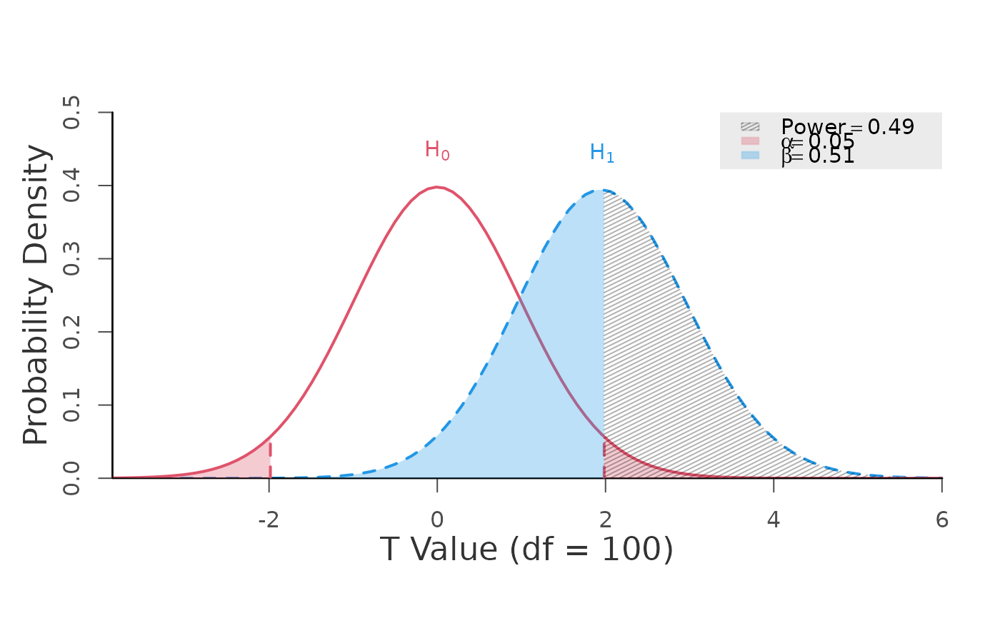
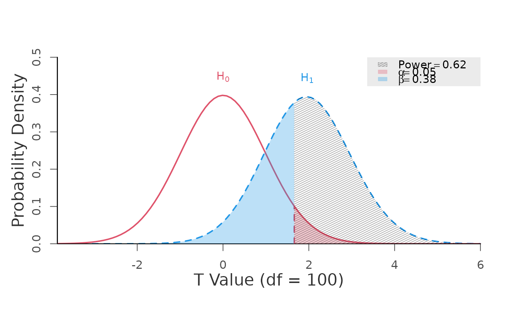
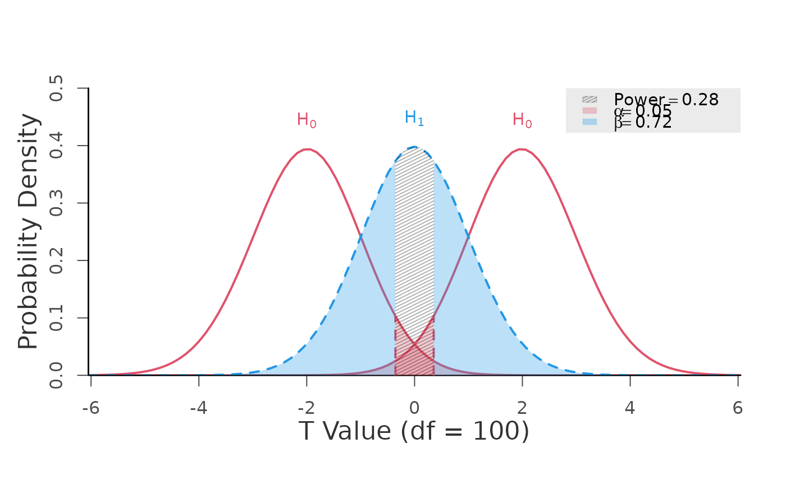
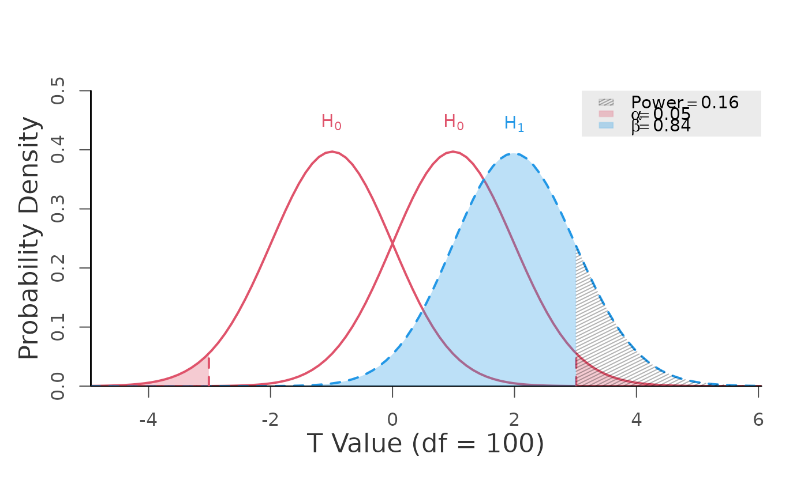

Statistical Power for the Generic T-Test
generic.t.test.RdCalculates power for the generic T-Test with (optional) Type 1 and Type 2 error plots.
Usage
power.t.test(ncp, null.ncp = 0, df, alpha = 0.05,
alternative = c("two.sided", "one.sided", "two.one.sided"),
plot = TRUE, verbose = TRUE, pretty = FALSE)Arguments
- ncp
non-centrality parameter for the alternative.
- null.ncp
non-centrality parameter for the null. When alternative = "two.one.sided", the function expects two values in the form c(lower, upper). If a single value is provided, it is interpreted as the absolute bound and automatically expanded to c(-value, +value).
- df
degrees of freedom.
- alpha
type 1 error rate, defined as the probability of incorrectly rejecting a true null hypothesis, denoted as \(\alpha\).
- alternative
character; direction or type of the hypothesis test: "one.sided", "two.sided", or "two.one.sided". "two.one.sided" is used for equivalence and minimal effect testing.
- plot
logical;
FALSEswitches off Type 1 and Type 2 error plot.TRUEby default.- verbose
logical; whether the output should be printed on the console.
TRUEby default.- pretty
logical; whether the output should show Unicode characters (if encoding allows for it).
FALSEby default.
Value
- df
degrees of freedom.
- ncp
non-centrality parameter under alternative.
- ncp.null
non-centrality parameter under null.
- t.alpha
critical value(s).
- power
statistical power \((1-\beta)\).
Examples
# two-sided
# power defined as the probability of observing a test statistic
# greater than the positive critical value OR
# less than the negative critical value
power.t.test(ncp = 1.96, df = 100, alpha = 0.05,
alternative = "two.sided")

#> +--------------------------------------------------+
#> | POWER CALCULATION |
#> +--------------------------------------------------+
#>
#> Generic T-Test
#>
#> ---------------------------------------------------
#> Hypotheses
#> ---------------------------------------------------
#> H0 (Null Claim) : ncp = null.ncp
#> H1 (Alt. Claim) : ncp != null.ncp
#>
#> ---------------------------------------------------
#> Results
#> ---------------------------------------------------
#> Type 1 Error (alpha) = 0.050
#> Type 2 Error (beta) = 0.507
#> Statistical Power = 0.493 <<
#>
# one-sided
# power is defined as the probability of observing a test statistic
# greater than the critical value
power.t.test(ncp = 1.96, df = 100, alpha = 0.05,
alternative = "one.sided")

#> +--------------------------------------------------+
#> | POWER CALCULATION |
#> +--------------------------------------------------+
#>
#> Generic T-Test
#>
#> ---------------------------------------------------
#> Hypotheses
#> ---------------------------------------------------
#> H0 (Null Claim) : ncp <= null.ncp
#> H1 (Alt. Claim) : ncp > null.ncp
#>
#> ---------------------------------------------------
#> Results
#> ---------------------------------------------------
#> Type 1 Error (alpha) = 0.050
#> Type 2 Error (beta) = 0.381
#> Statistical Power = 0.619 <<
#>
# equivalence
# power is defined as the probability of observing a test statistic
# greater than the upper critical value (for the lower bound) AND
# less than the lower critical value (for the upper bound)
power.t.test(ncp = 0, df = 100,
null.ncp = c(-2, 2), alpha = 0.05,
alternative = "two.one.sided")

#> +--------------------------------------------------+
#> | POWER CALCULATION |
#> +--------------------------------------------------+
#>
#> Generic T-Test
#>
#> ---------------------------------------------------
#> Hypotheses
#> ---------------------------------------------------
#> H0 (Null Claim) : ncp <= min(null.ncp) or
#> ncp >= max(null.ncp)
#> H1 (Alt. Claim) : ncp > min(null.ncp) and
#> ncp < max(null.ncp)
#>
#> ---------------------------------------------------
#> Results
#> ---------------------------------------------------
#> Type 1 Error (alpha) = 0.050
#> Type 2 Error (beta) = 0.723
#> Statistical Power = 0.277 <<
#>
# minimal effect testing
# power is defined as the probability of observing a test statistic
# greater than the upper critical value (for the upper bound) OR
# less than the lower critical value (for the lower bound).
power.t.test(ncp = 2, df = 100,
null.ncp = c(-1, 1), alpha = 0.05,
alternative = "two.one.sided")

#> +--------------------------------------------------+
#> | POWER CALCULATION |
#> +--------------------------------------------------+
#>
#> Generic T-Test
#>
#> ---------------------------------------------------
#> Hypotheses
#> ---------------------------------------------------
#> H0 (Null Claim) : ncp >= min(null.ncp) and
#> ncp <= max(null.ncp)
#> H1 (Alt. Claim) : ncp < min(null.ncp) or
#> ncp > max(null.ncp)
#>
#> ---------------------------------------------------
#> Results
#> ---------------------------------------------------
#> Type 1 Error (alpha) = 0.050
#> Type 2 Error (beta) = 0.837
#> Statistical Power = 0.163 <<
#>